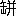

荷風年四十有二
正月元旦。
間適の余生暦日なきこと山中に在るが如し。午後鷲津牧師来訪。この日風なく近年稀なる好き正月なり。されど年賀に行くべき処なければ、自炊の夕餉を終りて直に寝に就く。正月二日。
快晴和暖昨日の如し。正月三日。
快晴。市中電車雑 甚しく容易に乗るべからず。歩みて芝愛宕下西洋家具店に至る。麻布の家工事竣成の暁は西洋風に生活したき計画なればなり。日本風の夜具蒲団は朝夕出し入れの際手数多く、煩累に堪えず。
甚しく容易に乗るべからず。歩みて芝愛宕下西洋家具店に至る。麻布の家工事竣成の暁は西洋風に生活したき計画なればなり。日本風の夜具蒲団は朝夕出し入れの際手数多く、煩累に堪えず。正月六日。
春陽堂主人和田氏年賀に来る。夜唖 子と電車通の宮川に飲む。
子と電車通の宮川に飲む。正月七日。
夜、微雨あり。アナトオル・フランスの L'Anneau d'Amethyste を読む。正月八日。
寒気稍寛なり。大工銀次郎を伴ひ麻布普請場に徃く。正月九日。
晴天。全集第四巻の原稿を春陽堂に送る。この日より再び四谷のお房を召使ふことにす。正月十日。
晴天。アンノオ、ダメチストを読む。篇中の主人公迷犬を書斎につれ来りて打興ずるあたり最面白し。七年前大久保の旧宅改築の際、一頭の牝犬、余が書斎の縁側に上り来りて追へども去らず、已むことを得ず玉と名づけて其儘飼置きし事など思起しぬ。それより家畜小鳥などにつきての追憶を書かばやと想ひを凝らす。正月十一日。
晴れてあたゝかなり。正月十二日。
曇天。午後野圃子来訪。夕餉の後忽然悪寒を覚え寝につく。目下流行の感冒に染みしなるべし。正月十三日。
体温四十度に昇る。正月十四日。
お房の姉おさくといへるもの、元櫓下の妓にて、今は四谷警察署長何某の世話になり、四谷にて妓家を営める由。泊りがけにて来り余の病を看護す。正月十五日。
大石君診察に来ること朝夕二回に及ぶ。正月十六日。
熱去らず。昏々として眠を貪る。正月十七日。
大石君来診。正月十八日。
渇を覚ること甚し。頻に黄橙を食ふ。正月十九日。
病床万一の事を慮りて遺書をしたゝむ。正月二十日。
病况依然たり。正月廿一日。
大石君又来診。最早気遣ふに及ばずといふ。正月廿二日。
悪熱次第に去る。目下流行の風邪に罹るもの多く死する由。余は不思議にもありてかひなき命を取り留めたり。正月廿五日。
母上余の病軽からざるを知り見舞に来らる。正月廿六日。
病床フロオベルの尺牘を読む。正月廿七日。
久米秀治来訪。正月廿八日。
褥中全集第四巻校正摺を見る。正月廿九日。
改造社原稿を催促する事頗急なり。正月三十日。
大工銀次郎来談。正月卅一日。
病後衰弱甚しく未起つ能はず。卻て書巻に親しむ。二月朔。
臥病。記すべき事なし。二月二日。
臥病。二月三日。
大石君来診。二月四日。
病床フオガツアロの作マロンブラを読む。二月六日。
唖子来つて病を問はる。二月七日。
寒気甚し。玄文社合評会の由。二月九日。
病床に在りておかめ笹続篇の稿を起す。此の小説は一昨年花月の廃刊と共に筆を断ちしまゝ今日に至りしが、褥中無聊のあまり、ふと鉛筆にて書初めしに意外にも興味動きて、どうやら稿をつゞけ得るやうなり。創作の興ほど不可思議なるはなし。去年中は幾たびとなく筆秉らむとして秉り得ざりしに、今や病中熱未去らざるに筆頻に進む。喜びに堪えず。二月十日。
蓐中鉛筆の稿をつぐ。終了の後毛筆にて浄写するつもりなり。二月十一日。
烈風陋屋を動かす。梅沢和軒著日本南画史を読む。新聞紙頻に普通選挙の事を論ず。盖し誇大の筆世に阿らむとするものなるべし。二月十二日。
蓐中江戸藝術論印刷校正摺を見る。大正二三年の頃三田文学誌上に載せたる旧稾なり。二月十四日。
建物会社員永井喜平見舞に来る。二月十五日。
雪降りしきりて歇まず。路地裏昼の中より物静にて病臥するによし。二月十七日。
風なく暖なり。始めて寝床より起き出で表通の銭湯に入る。二月十八日。
近巷を歩まむと欲せしが雨ふり出したれば止む。二月十九日。
風月堂に徃き昼餉を食す。小説おかめ笹執筆。夜半を過ぐ。草稾後一回にて完結に至るを得べし。二月二十日。
終日机に凭る。昼過霰の窓打つ音せしが夕方に至りて歇む。二月廿一日。
浴後気分すぐれず。二月廿二日。
早朝中洲病院に電話をかけ病状を報ず。感冒後の衰弱によるものなれば憂るに及はずとの事なり。安堵して再び机に凭る。二月廿三日。
唖子の書に接す。晩来雪紛たり。二月廿四日。
雪やみしが空くもりて寒し。午後永井喜平来談。おかめ笹最終の一章筆進まず。苦心惨澹。二月廿五日。
空くもりて風あたゝかなり。二月廿六日。
雨やかで雪となる。おかめ笹脱稾。二月廿八日。
一しきり歇みたる雪また降り出しぬ。唖子来る。二月廿九日。
空始て晴る。午後雪解の町を散歩す。三月朔。
朝日本橋第一銀行に赴き、株式払込の用件を辨じ、東洋軒にて食事をなし、八丁堀を過ぎて家に帰る。戯に小説作法なるものを草す。午後春陽堂番頭林氏来りしかばおかめ笹の草稾を与ふ。薄暮窓外雨声を聞く。路地を歩む人再び雪になるべしと語りて過ぐ。三月二日。
小説黄昏の腹案成る。三月三日。
婢お房病あり。暇を乞ひて四谷の家に帰る。三月四日。
風月堂にて昼餉をなす。采女橋を渡るに白鴎羣をなして溝渠に浮び餌をあされり。曾て浅草代地河岸に住みし時、二月三月の頃には白鴎屡羣をなし人家の屋根をかすめて飛ぶを見たり。かゝる日には夜に入りて必風烈しく吹出づるなり。三月五日。
くもりし空昼頃より晴る。麻布普請塲に赴く。近鄰の園梅既に開くを見る。三月七日。
朝の中机に凭る。風月堂にて昼餉をなし、麻布に徃く。燈前クロオデルの評伝を読む。初更新冨座裏に火事あり。三月八日。
丸善書店内を歩む。此の店家のみ徒に大きくして物品の価廉ならず。三月九日。
春風漸く暖なり。電車にて日比谷を過るに官衙の梅花咲き揃ひて、乱れ行く世のさまをも知らぬ気に見ゆ。春陽堂店員おかめ笹校正摺を持参す。三月十日。
晴天。明石町海岸通を歩む。三月十一日。
午後麻布に行く。帰途愛宕山に登る。春日遅々。夕陽白帆に映ず。藕花の的歴たるに似たり。三月十二日。
春雨霏。終日机に凭る。強風余寒を送る。枕上ベルヂツク現代詩文集を読む。三月十三日。
春寒料峭。江戸藝術論製本成る。三月十四日。
細雨烟の如く春尚寒し。連日執筆稍疲労を覚ゆ。燈下原稿罫紙を摺ること四五帖なり。三月十五日。
春雨猶歇まず。執筆の余暇樊川詩注を繙く。深更風あり。陋屋動揺すること船の如し。三月十六日。
晴天風烈しく路忽乾きて砂塵濛濛たり。都門桜花の時節既に近きを知る。三月十七日。
筆意の如くならず。銀座を歩む。千疋屋店頭覆盆子を売るを見る。二月の瓜も今は珍重するに足らざるなり。夜母上電話にて病を問はる。三月十八日。
玄文社劇評会の諸子、岡村 紅君米国漫遊の別筵を山谷堀の八百屋に張る。夕刻人力車を倩つて徃く。途上神田川の夕照甚佳なり。此の夜八百善の料理徃時の味なし。何の故なるを知らず。
紅君米国漫遊の別筵を山谷堀の八百屋に張る。夕刻人力車を倩つて徃く。途上神田川の夕照甚佳なり。此の夜八百善の料理徃時の味なし。何の故なるを知らず。三月二十日。
天気好し。母上の安否を問はむと、新宿通にて人力車に乗る。途次横町の垣根道にて図らず戸川秋骨君に逢ふ。鬢髪蕭疎四五年前に比すれば別人の如し。夜家に帰るに俄に発熱三十八度に及ぶ。終夜眠を成さず。三月廿一日。
起出るに熱去りて気分平生の如し。風をおそれて家を出でず。三月廿二日。
曇りて蒸暑し。湖山人南総稲毛に在り。絵端書を寄す。夜、微雨。三月廿三日。
雲低く空を蔽ひ溽暑六月の如し。午後九穂子来る。お房この日また帰り来りしかば伴ひて宮川亭に一酌す。新富座を立見して家に帰る。松莚子電話にて秀調実父金子元助の病死を報来る。深更雨声瀟瀟。歯痛む。三月廿四日。
おかめ笹印刷校正摺を閲し終る。細雨糠の如く、銀座街頭柳眼既に青し。三月廿五日。
風冷なれど本願寺墓地の木の芽雨中翠緑滴るが如し。歯痛みて悪寒を覚ゆ。三月廿七日。
晴天。中洲病院に徃き診察を請ふ。午後全集第四巻校正に忙殺せらる。三月廿八日。
日曜日。微風軽寒。三月廿九日。
微雨。三月三十日。
松莚子に招がれて東仲通末広に飲む。清潭子も亦招がる。河合武雄のために新作脚本を需めらる。三月三十一日。
雨歇まず。不願醒客訪来りしかば築地橋頭の酒亭に飲む。雲去りて雨歇み月出づ。銀座を歩みて再び清新軒に飲む。春陽堂この日江戸藝術論印税金を送り来る。四月一日。
木曜会。帰途雨に値ふ。四月二日。
雨ふる。玄文社歌舞伎座見物。四月三日。
雨歇まず。四月四日。
玄文社合評会なり。雨歇まず。日本橋通泥濘殆歩み難し。四月五日。
風雨歇まず。碧空を仰がざること旬日なり。燈前旧著日和下駄を校訂す。四月六日。
密雲散せず時雨あり。終日全集の校正にいそがはし。四月七日。
宿雨始めて晴る。神田仏蘭西書院に至り Claude Farr re の小説三四巻を購ふ。電車雑沓して乗り得ず。須田町に出で柳原を歩み両国を過ぎて家に帰る。
re の小説三四巻を購ふ。電車雑沓して乗り得ず。須田町に出で柳原を歩み両国を過ぎて家に帰る。四月八日。
蔵書を整理す。四月九日。
本願寺の桜花開く。本年春寒くして雨多かりし故花開くこと遅し。夜風吹出でゝ寒し。四月十日。
晴れて風静なり。終日散歩。不在中巌谷冬生来訪。四月十一日。
日曜日。天気好く花のさかりなり。四月十三日。
風あり塵烟濛々落花紛たり。麻布普請場よりの帰途尾張町にて小山内君に逢ふ。ライオン酒館に入りて語る。夜フアレヱルの小説バツタイユを読む。日露戦争を背景となし日本の旧華族の海軍士官となれるものを主人公とす。惜四月十四日。
風雨。夜に至りてます／＼烈し。四月十五日。
木曜会なり。楽天居書斎の卓上に一盆の石楠花を見る。主人に問ふに塩原山中の旅亭より贈来りしものなりと。石楠花は家内に病人などありて気なる時は、蕾のまゝ花開かずして萎るゝものなり。嘗て日下部鳴鶴翁の家にて花開かざりしもの、楽天居に持来るや、忽花を見たる実例もあり、と語られぬ。此夕風湿なりしが幸にして雨に値はず。四月十六日。
半蔵門外西洋家具店竹工堂を訪ひ、麻布普請塲に至る。桜花落尽して新緑潮の如し。四月十七日。
全集第四巻校正を終る。小説おかめ笹梓成る。竹田書房の主人転宅荷づくりに来る。四月十八日。
日曜日なり。快晴。夜銀座を歩む。四月十九日。
快晴。袷着たき程の暖気となる。銀座にて偶然南部秀太郎に逢ひ、清新軒に飲む。四月二十日。
湖山人来訪。四月廿一日。
快晴。午後写真機を携へ丸の内を歩む。四月廿二日。
午後雷雨一過。風忽寒し。四月廿三日。
湖山人著作小説集の序を草して郵送す。寒冷前日にまさる。深更地大に震ふ。四月廿四日。
快晴。風甚冷なり。夜銀座街頭にて葵山人に逢ひ清新軒に憩ふ。四月廿五日。
曇りて寒し。電車従業員同盟罷業をなす。市中電車なく街路間静にて徒歩するに好し。竹田屋末摘花三篇および洒落本意地の口持参。四月廿七日。
松莚清潭の二子と両国の鳥安に会飲す。雨歇み月出づ。五月人形の市を見て帰る。四月廿八日。
三菱銀行に徃き、有楽座事務所にて井阪梅雪子に面晤す。旧作三柏葉樹頭夜嵐上塲に関してなり。四月廿九日。
玉山子と相携へて木曜会に赴く。窪田空子伯林より帰来りて欧洲戦後の状况を語る。四月晦。
三柏葉樹頭夜嵐三幕を訂正す。五月朔。
雨ふる。五月二日。
晴天。麻布普請塲に徃き有楽座楽屋に立寄り夕刻帰宅。五月三日。
雨中帝国劇塲稽古場に徃き。正午より三柏葉の本読をなす。夜風雨。五月四日。
晴定りなし。夜驟雨屡来る。五月五日。
暴風模様にて空晴れず。雨屡来る。全集第六巻校正摺到着。五月六日。
不願醒客と木曜会に徃く。五月七日。
霖雨歇まず腹痛あり。懐炉を抱く。枕上アナトル・フランスの「巴里のベルジュレヱ」をよむ。五月八日。
豪雨の音に眠より覚む。終日降りつゞきたり。五月九日。
天候猶定まらず。新聞紙例によりて国内諸河の出水鉄道の不通を報ず。四五日雨降りつゞけば忽交通機関に故障を生ずること、江戸時代の川留に異ならず。当世の人頻に労働問題普通選挙の事を云すれども、一人として道路治水の急務を説くものなし。破障子も張替へずして、家政を口にするハイカラの細君に似たりと謂ふべし。五月十日。
帝国劇場稽古。附立につき赴き見る。五月十一日。
積雨始めて晴る。母上丸の内所用の帰途なりとて陋屋に立寄らる。倶に晩餐をなす。五月十二日。
開化一夜草二幕腹案成る。連日の雨に宿痾よからず。懐炉を抱く。五月十三日。
雨。終日机に凭る。五月十四日。
帝国劇場舞台稽古を見る。五月十六日。
帝国劇場初日。五月十七日。
終日筆を執る。五月十八日。
開化一夜草脱稿。五月十九日。
終日執筆。余事なし。五月二十日。
日暮漸雨。唖々子を俟ちしが来らず、独木曜会に徃く。葵山人と現今の演劇を論ず。五月廿一日。
午前春陽堂来談。永井喜平来談。五月廿二日。
久米宇野山崎の三子余のために三柏葉連中見物の催をなす。〔一行アキノ欄外朱書〕麻布移居
五月廿三日。
この日麻布に移居す。母上下女一人をつれ手つだひに来らる。麻布新築の家ペンキ塗にて一見事務所の如し。名づけて偏奇館といふ。五月廿四日。
転宅のため立働きし故か、痔いたみて堪難し。谷泉病院遠からざれば赴きて治療を乞ふ。帰来りて臥す。枕上児島献吉郎著支那散文考を読む。五月廿五日。
慈君来駕。五月廿六日。
毎朝谷氏の病院に徃く。平生百病断えざるの身、更に又この病を得たり。五月廿七日。
日暮驟雨雷鳴。五月廿八日。
午後井川滋君来り訪はる。其家余が新居と相去ること遠からざるを以てなり。三田文学創刊当時の事を語合ひて十年一夢の歎をなす。夜雨ふり出し鄰家の竹林風声颯颯たり。枕上児嶋氏の散文考をよむ。五月廿九日。
時々雨あり。寒冷暮秋の如し。五月三十日。
竹田屋の主人来り蔵書整理の手つだひをなす。此日、竹田屋歌麻呂春本（金参拾円）広重の行書東海道（金百参拾円）を示す。五月卅一日。
竹友藻風来り訪はる。日暮また雨。六月一日。
晴。新居書斎の塵を掃ひ書篋几案を排置す。六月二日。
苗売門外を過ぐ。夕顔糸瓜紅蜀葵の苗を購ふ。偏奇館西南に向ひたる崖上に立ちたれば、秋になりて夕陽甚しかるべきを慮り、夕顔棚を架せむと思ふなり。六月三日。
木曜会。痔疾痊えざれば徃かず。六月四日。
病大によし。夜有楽座に徃く。有楽座過日帝国劇場に合併し久米秀治氏事務を執れり。六月五日。
風雨終日歇まず。六月六日。
巌谷氏邸内の千里閣三年祭を行ふ由。通知に接したれど、新居家具整理のため赴き得ず。午後母上来らる。六月七日。
午後九穂子来る。少婢お房転宅の際より手つだひに来りしが此日四谷姉の許に帰る。晩間九穂子と共に銀座清新軒に至りて飲む。帰途風冷にして星冴えわたりしさま冬夜の如し。六月八日。
居宅と共に衣類に至るまで悉く西洋風になしたれば、起臥軽便にして又漫歩するに好し。写真機を携へ牛込を歩む。逢阪上に旗本の長屋門らしきもの残りたるを見、後日の参考にもとて撮影したり。六月九日。
快晴。午後玄文社新冨座見物。六月十日。
風湿りがちにて寒し。木曜会運座に徃く。六月十一日。
連日風冷なる故心地さわやかならず。夜玄文社合評会に徃く。六月十二日。
堀口大学ブラヂルの首都に在り。レニヱーの新著イストワル・アンセルテン一巻を郵寄せらる。堀口君余がレニヱーを愛読するを知り、其の新著出る毎に巴里の書肆に命じて郵送せらるゝなり。厚情謝すべし。六月十三日。
晴。六月十四日。
陰。有楽座に徃き文楽座の人形を看る。此夜初日。六月十五日。
全集第六巻校正半終る。六月十六日。
終日東北の風烈しく雨窗を撲つ。夜深益甚し。六月十七日。
帝国劇塲支配人山本氏余を赤阪の待合長谷川に招ぎ、尾上梅幸を紹介して、同優のために脚本執筆の事を依頼せらる。余甚光栄に感ずれども、当世の劇場は既に藝術の天地にあらざれば、余は唯当惑するのみなり。余が脚本に執筆するは、三味線をならひ、清元薗八を語る程度のものにて、其の折の座興に過きず。数日前春陽堂に送りたる開化一夜草の如きは即その一例なり。夜久米秀治に誘はれ三田文学茶話会に赴く。此日俄に暑し。六月十八日。
晴。虎の門を歩み花屋にて薔薇一鉢を購ふ。六月十九日。
半陰半晴。偏奇館の窗に倚りて対面の崖を眺むるに、新樹の間に紫陽花の蒼白く咲き出でたる、又枇杷の実の黄色に熟したるさま、田家の庭を見るが如し。夜有楽座人形芝居二ノ替初日を看る。六月二十一日。
雨ふる。※［＃「くさかんむり／聿」、U+831F、116-7］秉らむとせしが感興来らず。去年の古団扇に発句を書す。六月廿二日。
曇天。腹中軽痛あり。心地爽快ならず。六月廿三日。
母上来訪。夜雨ふる。六月廿四日。
曇る。午後氷川神社境内を歩む。日暮唖子来る。相携へて木曜会に徃く。六月廿五日。
午後榛原紙舗に徃き団扇を購ふ。東仲通の古着屋丸八の店頭を過ぐ。店構改築せられ縫模様の裲襠硝子戸の内に陳列せられしさま博物館の如し。六月廿六日。
九穂子と冨士見町に飲む。妓鶴代を招ぐ。此の地にて誰知らぬものなき※［＃「さんずい＋揺のつくり」、U+6EDB、116-16］物なりといふ。六月廿八日。
南風吹きて心地わろし。六月廿九日。
晴。七月朔。
朝高見沢といふ人水上瀧太郎氏の紹介状を持ち面談を請ふ。浮世絵飜刻の事につきてなり。七月三日。
梅雨あけて炎暑の日来る。七月五日。
痔疾一時再発の虞ありしが全く癒えたり。晩涼を追ひ銀座を歩む。虫屋にて邯鄲を買ふ。その価壱円なり。七月六日。
案頭の寒暑計華氏八十四度を示す。春陽堂開化一夜草礼金壱百五拾余円を贈来る。七月七日。
麻布四ノ橋の新劇塲を看る。但し玄文社合評会の為めなり。七月八日。
炎暑甚し。夜木曜会俳席。七月九日。
炎暑。七月十日。
午後驟雨あり。七月十一日。
玄文社合評会。七月十二日。
新冨座に人形を観る。七月十三日。
夜井阪氏宅にて帝国劇塲の宇野邦枝久米氏等と会す。涼風あり。七月十七日。
井川滋君来り訪はる。七月二十日。
隣家の庭園夾竹桃の花燃るが如し。七月廿一日。
例年の如く水道の水不足となる。七月廿二日。
木曜会。七月廿三日。
午後雨ふる。毎日の炎暑に枯れかゝりし草花忽ちよみがへりぬ。七月廿四日。
風雨。七月廿五日。
歌舞伎座にて松莚子に逢ふ。七月廿六日。
稍涼し。七月廿七日。
銀座松島屋にて老眼鏡を購ふ。荷風全集ポイント活字の校正細字のため甚しく視力を費したりと覚ゆ。余が先人の始めて老眼鏡を用ひられしも其年四十二三の時にて、余が茗渓の中学を卒業せし頃なるべし。余は今年四十二歳なるに妻子もなく、放蕩無頼われながら浅間しきかぎりなり。七月廿九日。
麻布十番通の夜肆を観る。七月三十日。
風ありて涼し。七月卅一日。
西風颯々、夜凉秋の近きを知らしむ。夕顔の花白し。八月一日。
帝国劇場初日を見る。八月二日。
不願醒客と麻布網代町の妓家に飲む。八月三日。
百日紅の花灼然たり。八月五日。
楽天居運座。雷雨甚し。雨戸をしめて句をつくる。初更に至つて霽れたり。此夜主人の令嬢十八年の誕生日なりとて手づくりの田舎汁粉を馳走せらる。余病後六年汁粉を口にせざりしが、この頃の腹具合なれば気遣ふにも及ばじとて、二椀を更へたたり［＃「更へたたり」はママ］。家に慶事ある時汁粉鮓などつくりて来客をもてなす事を得るは、全く妻八月六日。
母上来り訪はる。夜漸く涼し。未だ虫を聞かず。八月七日。
驟雨。八月八日。
この日立秋。八月九日。
驟雨歇まず。八月十日。
午前雨の晴間を窺ひ中洲病院に徃く。日暮九穂子来る。八月十一日。
再び暑くなりぬ。庭上燈心蜻蛉の多く飛ぶを見る。八月十二日。
秋に入りてより日の暮れざまあはたゞしくなりぬ。夕顔の花咲出る頃行水して銀座に行き、晩食を食し、日比谷公園を過ぎて帰る。国訳漢文大系本戦国策を読む。虫始めて啼く。八月十三日。
夜有楽座に久米氏を訪ふ。始めて守田勘弥に会ふ。八月十四日。
毎日秋暑甚し。八月十五日。
晩涼水の如し。燈下偏奇館漫録を草して新小説に寄す。八月十六日。
鄰家の朝顔垣に攀ぢてわが庭に咲き出でぬ。崖の竹藪にさら／＼と音する風、秋ならでは聞かれぬ響なり。八月十七日。
糸瓜の葉裏に芋虫多くつきたり。八月十八日。
驟雨あり。紅蜀葵の花さく。八月十九日。
二百十日近づきたるにや風雨頻なり。八月二十日。
新聞記者の訪問を避けむとて戯に左の如き文言を葉書にしたゝめ新聞雑誌の各社に送る。
拝啓益御繁栄の段奉賀候陳者小生今般時代の流行に従ひ原稿生活改造の儀実行致度大畧左の如く相定申候間何卒倍旧の御引立に与り度く伏して奉願上候
一新聞雑誌其他文藝の御用向にて御訪問の※［＃「くさかんむり／即」、U+83AD、120-11］は予め金拾円御郵送被下度候さ候へば三個月以内に面晤の時日御通知可申上候尚其※［＃「くさかんむり／即」、U+83AD、120-12］ハ面談料三十分間に付金五円宛申受候
一寄稿御依頼の※［＃「くさかんむり／即」、U+83AD、120-14］ハ長短に係らず前金手付金壱百円御郵送被下度候左候得者三個年以内に脱稿可仕其※［＃「くさかんむり／即」、U+83AD、120-15］ハ別に一字金壱円宛申受候
一小生写真御掲載の※［＃「くさかんむり／即」、U+83AD、120-16］ハ金五拾円申受候
御繁栄の段奉賀候陳者小生今般時代の流行に従ひ原稿生活改造の儀実行致度大畧左の如く相定申候間何卒倍旧の御引立に与り度く伏して奉願上候一新聞雑誌其他文藝の御用向にて御訪問の※［＃「くさかんむり／即」、U+83AD、120-11］は予め金拾円御郵送被下度候さ候へば三個月以内に面晤の時日御通知可申上候尚其※［＃「くさかんむり／即」、U+83AD、120-12］ハ面談料三十分間に付金五円宛申受候
一寄稿御依頼の※［＃「くさかんむり／即」、U+83AD、120-14］ハ長短に係らず前金手付金壱百円御郵送被下度候左候得者三個年以内に脱稿可仕其※［＃「くさかんむり／即」、U+83AD、120-15］ハ別に一字金壱円宛申受候
一小生写真御掲載の※［＃「くさかんむり／即」、U+83AD、120-16］ハ金五拾円申受候
月 日
小説家永井荷風敬白
八月廿一日。
日暮驟雨。八月廿二日。
日曜日。暮雲燦然。夕陽燃るが如し。秋漸く深きを知る。虫の声夜ごとに多くなりぬ。八月廿三日。
残暑甚し。八月廿四日。
唖々子病めりといふ。八月廿五日。
竹田屋の主人写真機を携来りて偏奇館書斎を撮影す。八月廿六日。
曇りて風冷なり。初めて燈火に親しむ。八月廿七日。
秋夢の如く草花漸く鮮妍たり。夜細雨糠の如し。八月廿八日。
午餐後有楽座改築工事を看る。夜偏奇館漫録を草す。八月三十日。
日秋暑焼くが如し。八月卅一日。
全集第六巻校正終了。九月朔。
晩風残暑を払ふ。月明水の如し。九月二日。
二百十日に当るといふ。午後驟雨あり。木曜会に赴く。巌谷三一始て席上にて其の作品を朗読す。九月三日。
午後金沢の今村君来り訪はる。其の令嬢今年二十二歳となり洋行したしと言居らる由を語らる。余徃年今村君と米国の各地を漫遊せし当時の事を思へば夢の如き心地す。世の親達は娘子供の事に心を労せらるゝに、余のみ十年一日の如く、苦労は唯何か面白きもの書きたしといふに過きず。喜ぶべきか悲しむべきか。日の暮るゝを俟ち銀座の風月堂に案内して倶に晩餐をなす。夜半大雨あり。九月四日。
綾部野圃来訪。夜また雨ふる。九月五日。
有楽座に立寄る。九月六日。
風なく蒸暑堪難し。時驟雨あり。九月八日。
帝国劇場稽古を見る。九月九日。
三田連中有楽座総見物をなす。久米秀治この座の仕切塲をあづかりたるが故其の栄任を祝せむとの心なり。九月十日。
午後より雨ふり出して風寒し。九月十一日。
大雨夕刻に晴る。晩照燦爛たり。九月十二日。
晴天。偏奇館漫録を春陽堂に送る。九月十三日。
朝夕の寒さ袷あらば着たきほどなり。九月十四日。
氷川明神の祭礼なるべし。馬鹿囃子深更に至るも止まず。九月十五日。
去年の暮注文したる書籍巴里より到着す。九月十六日。
木曜会なり。九月十七日。
竹田屋春水の作と称せらるゝ春本千種の花を持ち来れり。九月十八日。
細雨晩蕭。九月十九日。
日曜日。夜また雨。九月二十日。
有楽座に露国人の舞踊を観る。九月廿二日。
九穂致軒の二子と浅草公園に安木節を聴く。近頃市中の寄席また吉原など、到るところ安木節大に流行すと聞きしが、吾等一たびも耳にせし事なきを以て此夜浅草まで出向きしなり。近在百姓の盆踊と浪花節とを混じたるやうなものなり。九月廿三日。
今年もいつか秋の彼岸となりぬ。偏奇館斜陽甚しければ、この日園丁に命じて窗前にプラタン樹両三株を植ゆ。晩間風雨来らむとせしが深更に至り月を見る。九月廿四日。
秋暑未去らず。終日筆硯に親しむ。九月廿五日。
新橋旧売茶亭の主人関口翁を訪ひ其懐旧談を聴く。九月廿六日。
清元会の帰途梅吉夫婦及田村女史と築地の野田屋に飲む。此夜中秋なれど月無し。九月廿七日。
空くもりしが深更に至り始めて月を見る。九月三十日。
夜風月堂より歩みて家に帰らむとするに、豪雨盆を覆すが如し。三十間堀の春日に立寄り車を命ぜしが風烈しくして車通じがたしといふ。已むを得ず自働車にて帰る。四年前の今月今夜は築地一帯に海嘯あり。此夜もいかゞと思ひしに風雨夜半を過るに従ひ次第に歇む。此の夜区役所の吏国勢調査と号して深更猥に人家の戸を敲き、人員を調査せしといふ。十月朔。
雨後の空晴渡りて雲なし。庭上落葉狼籍たり。掃うて日暮に至る。夜執筆。十月二日。
井阪梅雪氏来訪。十月四日。
蒸暑くして復豪雨あり。夜三十間堀の春日に徃き田口桜村井上唖々の二子と飲む。十月五日。
堀口大学南米よりレニヱーの新著を郵送せらる。十月六日。
唖々子と春日に飲む。十月七日。
玄文社観劇会。十月十日。
鵙啼く。十月十一日。
岡鬼太郎君新作狂言今様薩摩歌の批評を草して雑誌新演藝に寄す。十月十二日。
仏蘭西書院より去冬注文の書籍を送来る。十月十三日。
偏奇館漫録の草稾を春陽堂に郵送す。十月十四日。
木曜会運座。帰途唖子と春日に一酌す。妓を自働車に載せ唖子を本郷の家に送りて帰る。十月十五日。
庭の落葉を掃ふ。十月十六日。
菊を植ゆ。十月十七日。
雨ふる。新冨座に松莚君を訪ふ。十月十八日。
新着の仏蘭西小説を閲読す。十月二十日。
雨ふる。玉山酔客と銀座の清新軒に飲む。十月廿一日。
大雨。夜に至りて益甚し。十月廿二日。
天候定まらず。新寒肌に沁む。十月廿三日。
。十月廿四日。
晴。午後湖山紫草の二子来り訪はる。此夜十三夜の月よし。虫猶鳴く。十月廿五日。
猿之助の春秋座を観る。十月廿六日。
研究座見物。近来この種の演劇殆数るに遑あらず。十月廿七日。
松莚子と日本橋末広に飲む。十月廿九日。
日本橋鴻巣亭にて上田博士追悼会あり。帰途雷雨。十月三十日。
午後神田青年会館に徃き、外国語学校語学練習演劇を看る。帰途銀座風月堂にて松莚子に逢ふ。十月晦。
歯痛甚しく悪寒を感ず。十一月朔。
花火の音聞ゆ。明治神宮祭礼なるべし。十一月二日。
窗外山茶花満開。十一月三日。
雨。十一月四日。
空晴れて暖なり。いかにも小春らしき天気なり。十一月五日。
木曜会運座に徃く。晴れて蒸暑し。十一月六日。
玄文社合評会のため、帝国劇場に幸四郎の国性爺、段四郎の甘輝を見る。十一月八日。
玄文社合評会。十一月九日。
執筆興なし。読書に日を消す。十一月十日。
虎の門金毘羅の縁日なり。草花を購ふ。十一月十一日。
書篋の蓋の破れしをつくろひ、愛誦の唐詩を題す。十一月十二日。
山茶花落ちて風漸く寒し。書架を整理す。十一月十三日。
飯倉通にてセキセイ鸚哥を購ふ。一トつがひ十四円なり。先年大久保に在りし頃、九段阪小鳥屋にて買ひし折には七八円と覚えたり。物価の騰貴鳥に及ぶ。人才の価は如何。十一月十四日。
日寒気加はる。十一月十五日。
晴れてあたゝかなり。神田仏蘭西書院にてジユール・ロマンの詩集「欧羅巴」其他数巻を購ふ。この頃創作興至らず。新刊の洋書を読むで日を送る。弦月夜書窗を照す。十一月十六日。
近巷の岨崖黄葉を見るによし。漫歩すること半日。十一月十七日。
チユリツプ球根を花壇に埋む。十一月十八日。
氷川境内の黄葉を見る。十一月十九日。
快晴。母上来訪。山形ホテル食堂に晩餐を倶にす。深更雨声頻なり。十一月廿日。
。十一月廿一日。
全集第六巻梓成る。十一月廿二日。
三河台辺散歩。十一月廿三日。
寒雨歇まず。燈下義山雑纂を写す。十一月廿四日。
窗外の竹林鶯の笹鳴をきく。十一月廿五日。
郡虎彦英国より帰る。松莚子小山内氏等と東仲通の末広に郡氏を招飲す。十一月廿六日。
帝国劇場にて歌舞伎研究会開演。十一月廿八日。
松莚子に招がれ竈河岸の八新亭に飲む。夜暖にして月あり。十一月廿九日。
近巷岨崖の雑草霜に染みたるあり。既に枯れたるあり。竹藪には烏瓜あまた下りたり。時に午 の鳴くを聞く。景物宛然として村園に異ならず。
の鳴くを聞く。景物宛然として村園に異ならず。十一月三十日。
霊南阪上に広濶なる閑地あり。霜枯れしたる草の間に菫らしき草あるを見、採り来りて庭に植ゆ。昨夜十一時浅草公園御国座焼亡せし由。十二月三日。
偏奇館漫録第三を春陽堂に郵送す。十二月四日。
風烈し。氷川社頭の黄葉を見る。十二月五日。
松莚子邸午餐に招がる。大彦翁小山内君も亦招がる。曇りてさむし。十二月七日。
早朝より雪降る。屡庭に出でゝ庭樹の雪を払ふ。玄文社合評会に徃く。雪やまず。岡村柿紅子と自働車を倶にして帰る。十二月八日。
貯蔵銀行一昨日より取付に遇ひ居る由。余銀座の支店に少しばかり貯金あれど、今更如何ともすべき道なければ、本年厄落しのつもりにて棄てゝ顧ず。雪歇みしが寒気甚し。十二月九日。
木曜会への行掛け風月堂にて金子紫草に逢ふ。同雲暗澹。再び雪を催す。十二月十日。
寒気烈し。終日炉辺に読書す。十二月十二日。
感興なけれど勉強して筆を秉る。十二月十三日。
散歩。手袋を購ふ。岡野知十氏の玉菊とその三味線をよむ。深更北風烈しく窗の戸をうごかす。十二月十四日。
全集第五巻校正摺この日より来り始む。十二月十五日。
晴れて暖なり。午後母上来訪。十二月十六日。
木曜会なれど来るもの少からむと思ひて徃かず。玉山酔客と風月堂に一酌す。十二月十七日。
暖き日なり。散歩の途上キユイラツソオ一を購ふ。十二月十八日。
寒雨霏。竹田屋藝苑※［＃「最」の「日」に代えて「林」、U+6A37、129-5］書持参。十二月十九日。
微恙あり。暁地震あり。十二月二十日。
小説雨瀟瀟筆大に進む。十二月廿一日。
晴天。深更地また震ふ。十二月廿二日。
新居南向きにて日あたりよし。 窗午睡を貪る。浅間山噴火の報あり。
窗午睡を貪る。浅間山噴火の報あり。十二月廿三日。
楽天居運座に徃く。寒月皎々たり。十二月廿四日。
小説雨瀟大半稿を脱す。大正七年の冬起稿したりし紅箋堂佳話を改作したるものなり。十二月廿五日。
竹工堂を訪ひ椅子を購ふ。十二月廿六日。
晴れて暖なり。十二月廿七日。
松莚子余と川尻氏とを竈河岸の八新に招飲す。此日午後市ヶ谷監獄署跡新開町焼亡すと云。十二月廿八日。
庭に福寿草を植ゆ。十二月廿九日。
寒気凛冽なり松莚子に招がれて風月堂に飲む。十二月三十日。
小説執筆余事なし。十二月晦日。
早朝より雪降る。除夜の鐘鳴る頃雪歇みて益寒し。キユイラツソオ一盞を傾けて臥牀に入る。